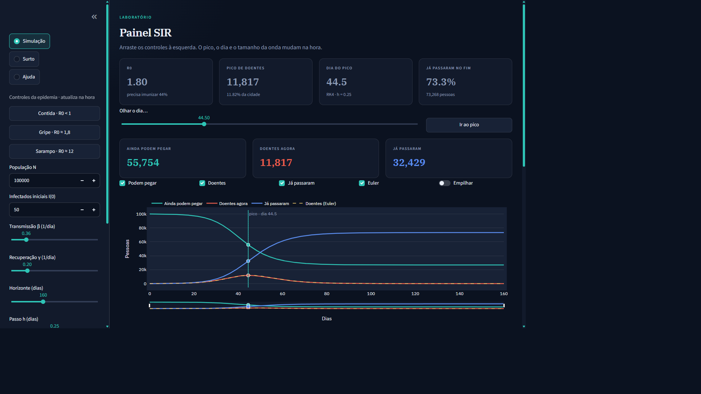
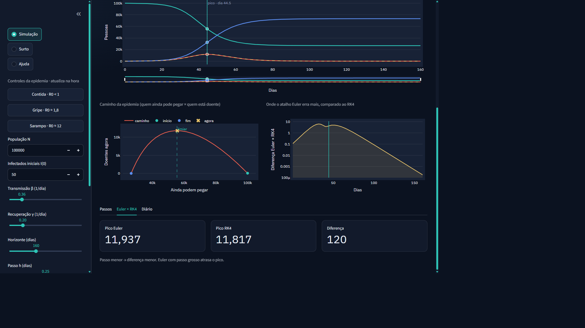
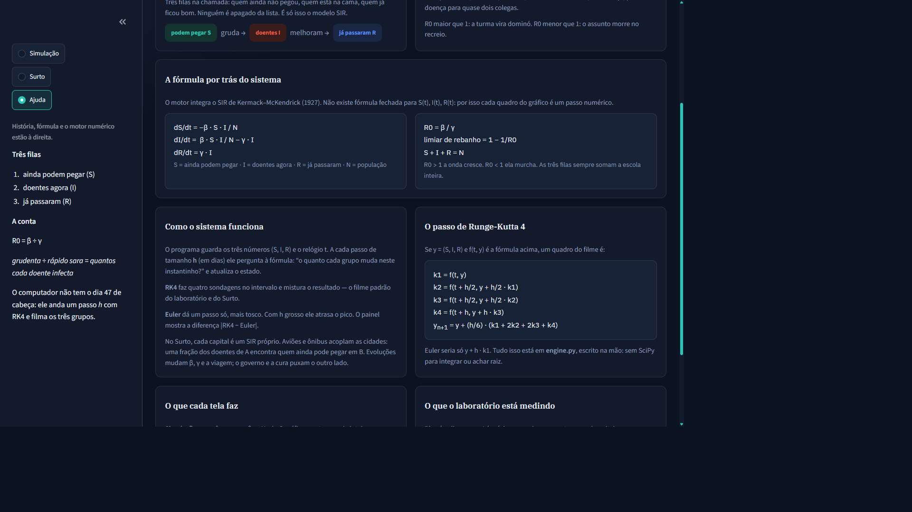
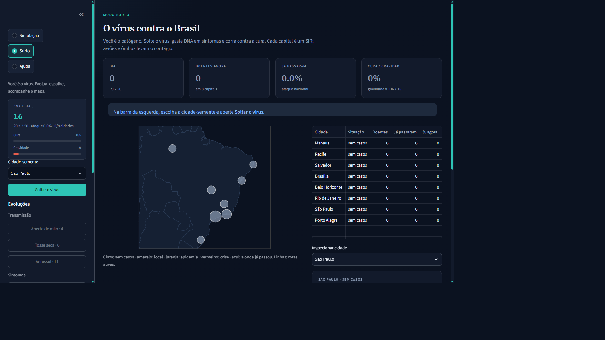

Um laboratório numérico para a epidemia clássica de Kermack–McKendrick. O motor de integração é escrito na mão. A interface só coleta parâmetros e filma o resultado.
Não existe fórmula fechada para S(t), I(t) e R(t). A órbita no plano S–I envolve Lambert W; a série no tempo exige um método de EDO.
1 · Pico
máx I(t)
Quantas pessoas doentes ao mesmo tempo — o pior dia para o hospital.
2 · Dia do pico
t*
Quando a onda estoura. Euler grosso atrasa esse instante; RK4 não.
3 · Ataque final
(N − S) / N
Que fração da cidade já passou pela doença quando a curva morre.
S ainda podem pegar · I doentes agora · R já passaram. Ninguém some da lista: S + I + R = N.
engine.py não chama scipy.integrate, odeint nem solve_ivp. NumPy entra só como array. A exponencial da fase inicial existe somente em tests.py.
Euler explícito · ordem 1
Um passo só, barato. Com h grosso atrasa o pico e pode produzir compartimento negativo. No painel é o atalho que a gente compara.
Runge-Kutta 4 · ordem 4
Quatro sondagens no intervalo. Motor padrão do laboratório e do Surto.
Print real do app. Cenário gripe, N = 100 000, I(0) = 50, h = 0,25. Pico 11 817 no dia 44,5 · ataque 73,3% · R0 1,80.

Simulação · print do sistemaTrês provas na mesma tela: o caminho S×I, a diferença |RK4 − Euler| ao longo do tempo, e o pico dos dois métodos.

Pico Euler 11 937 · Pico RK4 11 817 · diferença 120A aba Ajuda conta a história da escola e, em seguida, a EDO e o RK4 — o mesmo texto que o motor usa em engine.py.

Ajuda · SIR + RK4, sem SciPyCada cidade é um SIR. Aviões acoplam os estados. DNA compra sintomas; o governo e a cura puxam o outro lado. PDF do log incluso.

Surto · 8 SIRs acoplados por viagempython tests.py — os cinco passaram. A atividade pedia no mínimo três.
Caso 1 · conservação
S+I+R = N em 640 passos. Drift máximo 1,02e-10.
Caso 2 · exponencial
I(5) numérico 27,1815 vs analítico 27,1823. Erro relativo 0,003%.
Caso 3 · R0 < 1
R0 = 0,40. I só cai: pico = I(0) = 200, I final = 0.
Caso 4 · falhas
N = 0, γ = 0, h < 0 e I0 > N rejeitados com mensagem clara.
Caso 5 · RK4 × Euler, h grosso
Referência RK4 h = 0,05: pico 6 022,6. Euler h = 0,50 erra 176. RK4 h = 0,50 erra 3,6.
O que o briefing exigia, mapeado para o arquivo e para o print que acabamos de ver.
| Requisito | Onde comprovar | |
|---|---|---|
| Aplicação funcional | app.py · Streamlit com Simulação, Surto e Ajuda. | sim |
| Visualização | Plotly: série S/I/R, plano de fase, erro local, mapa. | sim |
| Erro e convergência | |RK4 − Euler| no gráfico; pico Δ120; drift 1,02e-10. | sim |
| ≥ 3 testes vs referência | tests.py: 5 casos vs referência analítica e RK4 fino. | sim |
| Engine própria | passo_euler e passo_rk4 em engine.py. Sem SciPy. | sim |
| README | README.md: problema, método, execução, validação. | sim |
Para rodar
streamlit run app.py
python tests.py · http://localhost:8504
Obrigado. Perguntas.